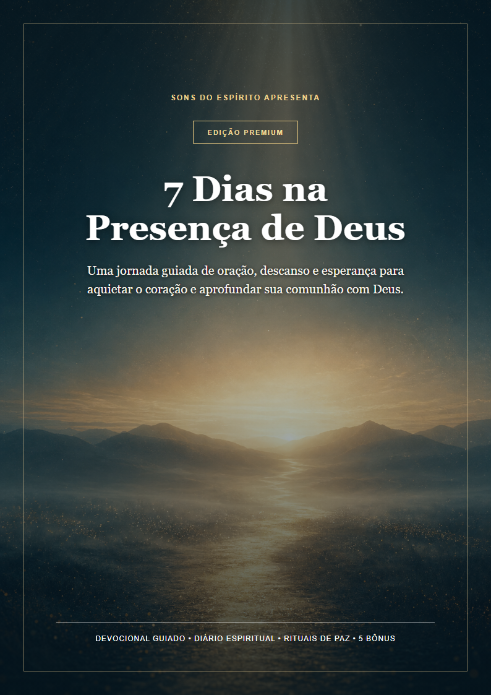

Cansaço interior
Você quer buscar a Deus, mas chega ao fim do dia sem energia.
Devocional cristão • Edição Premium
Uma jornada guiada para quem se sente cansado, distante ou sem palavras para orar — com leituras breves, orações sinceras e práticas que cabem na vida real.
Acesso digital imediato • Compra segura • Garantia de 7 dias

Talvez você esteja vivendo isso
A mente não desacelera. A oração parece repetitiva. O silêncio dá a impressão de distância. E até separar alguns minutos começa a parecer difícil.
Você quer buscar a Deus, mas chega ao fim do dia sem energia.
Você começa a orar e não sabe como continuar com sinceridade.
A demora das respostas faz o coração duvidar do caminho.
Você não precisa começar com uma grande mudança. Precisa apenas de um caminho simples para voltar.
Uma experiência, não apenas leitura
O e-book conduz você por uma sequência leve: perceber, refletir, conversar com Deus e transformar a leitura em um passo possível.
Texto bíblico
Uma verdade central para orientar o encontro.
Reflexão acolhedora
Linguagem simples, profunda e livre de culpa.
Prática guiada
Respiração, entrega, memória e pequenos passos.
Oração e diário
Palavras para começar e espaço para sua história.
Sua jornada de sete dias
Cada dia trabalha uma necessidade real do coração.
Perceber a presença mesmo quando as emoções silenciam.
Separar responsabilidade daquilo que você não controla.
Aprender a esperar sem esconder perguntas sinceras.
Receber descanso sem culpa e respeitar seus limites.
Lembrar a fidelidade passada e acolher o hoje.
Dar o próximo passo e reconhecer seu círculo de apoio.
Construir um hábito espiritual possível para continuar.
Incluídos na edição premium
Ferramentas práticas dentro do próprio PDF — sem arquivos soltos ou complicação.
Ansiedade, insônia, solidão, decisões, desânimo, perdão e gratidão.
Leituras e práticas para consolidar o hábito durante 21 dias.
Frases essenciais para fotografar, recortar ou deixar à vista.
Uma sequência de oito movimentos para quando você não sabe como começar.
Rituais da manhã e noite, diário, 30 perguntas e seu mapa pessoal de paz.
Todo retorno sincero também é um ato de fé.
Você não precisa viver sete dias perfeitos. Só precisa se permitir recomeçar.
Acesso imediato
Receba o e-book premium completo e os cinco bônus em um único material, pronto para ler no celular, computador ou imprimir.
CONDIÇÃO DE LANÇAMENTO
Valor sugerido R$ 47,00
pagamento único • acesso vitalício
Quero começar agora🔒 Compra processada com segurança pela Hotmart
Conheça o material. Se não fizer sentido para você, solicite o reembolso dentro do prazo da plataforma.
Perguntas frequentes
Após a confirmação do pagamento, a Hotmart envia as instruções de acesso para o seu e-mail.
Em média, de 15 a 20 minutos. Você também pode seguir no seu próprio ritmo.
Sim. O material é entregue em PDF e foi diagramado para leitura digital e impressão em papel A4.
É um devocional cristão baseado em referências bíblicas, com linguagem acolhedora e acessível.
O acesso é pessoal. O arquivo não pode ser distribuído, republicado ou revendido.
Você pode solicitar o reembolso dentro do prazo de 7 dias, conforme as regras da Hotmart.
Separe alguns minutos. Respire. Recomece.
Quero meu devocional